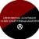

Upcoming EventsNo upcoming events.
|
Διεθνή / Αναρχικό κίνημα / Γνώμη / Ανάλυση Saturday January 16, 2021 20:31 byΓιάννης Βολιάτης*
Για τους επαναστάτες πάντως, ισχύει πάντοτε η θέση της υπεράσπισης των εξεγέρσεων των από-τα-κάτω ενάντια στους δυνάστες τους, η συμμετοχή σε αυτές με τις δικές τους δυνάμεις, σύμβολα και προτάγματα και η αιώνια προσπάθεια για την ταξική αυτο-συνείδηση των εκμεταλλευόμενων τάξεων, μέσα και από τις εξεγερσιακές διαδικασίες. Στις 8/12, στις 01:05 το βράδυ, στην λούμπεν αστική δημοκρατία της Αλβανίας, στην πόλη των Τιράνων, έλαβε χώρα η κρατική δολοφονία του 25χρονου Κλόντιαν Ράσα από το πιστόλι ενός μπάτσου, ο οποίος δεν δίστασε ούτε λεπτό να τον πυροβολήσει δυο φορές στο σώμα, επειδή ο νεαρός δεν σταμάτησε σε σήμα για έλεγχο, φοβούμενος προφανώς το πρόστιμο για την παραβίαση του κορονο-ωραρίου, μόλις 50 μέτρα μακριά από την πόρτα του σπιτιού του. Μετά από την δολοφονία βγήκαν καλέσματα για συγκεντρώσεις και πορείες διαμαρτυρίας από ένα ετερόκλητο μείγμα οργανώσεων, οι οποίες πολύ γρήγορα μετατράπηκαν σε βίαιη εξέγερση των από τα κάτω, των καταπιεσμένων, ενάντια στην αστυνομοκρατία, την καταστολή και τον αυταρχισμό του καθεστώτος του Έντι Ράμα, ο οποίος ανέλαβε την διακυβέρνηση της χώρας το 2013. Ο Ράμα και η Αλβανία Ο Ράμα ήταν ένα πουλέν του παλιού Χοτζικού “κομμουνιστικού” κύκλου, από οικογενειακών καταβολών (οι γονείς του ήταν και οι δυο άρρηκτα συνδεδεμένοι με το καθεστώς). Σπουδαγμένος στην Ευρώπη και ανοιχτά κριτικός ως προς το μετα-χοτζικό κράτος του Σαλί Μπερίσα, ο Ράμα εξαργύρωσε την στάση του με υπουργικές θέσεις στις “σοσιαλδημοκατικές” κυβερνήσεις του Φάτος Νάνο στα τέλη της δεκαετίας του ’90. Από το 2005 εμφανίζεται ως ο “ηγέτης της ενωμένης Αριστεράς”, ως αρχηγός του μεγαλύτερου αριστερού κόμματος, του Σοσιαλιστικού Κόμματος της Αλβανίας -μεταλλαγμένου διαδόχου του Αλβανικού Κόμματος Εργασίας του Χότζα και του Νάνο- ηγούμενος ενός σχηματισμού που όσο πλησίαζε στην εξουσία και μετά την κατάκτησή της, μετατοπιζόταν σταδιακά προς το Κέντρο (μας θυμίζει κάτι αυτό;). Ταυτόχρονα, διετέλεσε και Δήμαρχος Τιράνων από το 2000 έως το 2011. Στην πορεία του προς την πρωθυπουργία, αντίπαλός του ήταν το λεγόμενο “συντηρητικό μπλοκ” του Μπερίσα, του πρώτου εκλεγμένου προέδρου της Αλβανίας μετά την πτώση του καθεστώτος, με κύριο πυλώνα το δεξιό Δημοκρατικό Κόμμα. Τον Μπερίσα διαδέχθηκε στο κόμμα ο Μπάσα μετά την εκλογική ήττα του 2013, ο οποίος προσπάθησε να “εκμοντερνίσει” την Δεξιά και πρωτοστάτησε στις διαμαρτυρίες ενάντια στην κυβέρνηση το 2017. Όσο ο Ράμα ατσάλωνε την θέση του στην Πρωθυπουργία, μετά και την επανεκλογή του το 2017, τόσο προχωρούσε προς απολυταρχικές μεθόδους διακυβέρνησης, αστυνομοκρατία και βία, ενώ ταυτόχρονα κινούνταν προς φιλελεύθερες οικονομικές πολιτικές, και παράλληλα κατηγορούταν για υπεξαίρεση χρημάτων, απάτες, αλλά και για σχέσεις με τις ναρκομαφίες της χώρας. Εξαιτίας όλων αυτών δέχθηκε κριτική ακόμη και από το εσωτερικό του ίδιου του κόμματός του, συγκεκριμένα από την πιο αριστερή πτέρυγα, υπό τον παλαιό μέντορά του, Νάνο. Ουσιαστικά, η δολοφονία του Κλόντιαν Ράσα ήταν το “φυσικό επακόλουθο” μιας διακυβέρνησης βασισμένης στα παραπάνω στοιχεία, και μιας χώρας ευρισκόμενης σε καθεστώς έκτακτης ανάγκης, λόγω του κορονοϊού, της καραντίνας και της περαιτέρω απολυταρχικοποίησης και αστυνομοκρατίας. Τόσο η δολοφονία αυτή καθαυτή, όσο και η μεγάλη κοινωνική έκρηξη που την ακολούθησε, ήταν αναπόφευκτο να συμβούν, σε μια χώρα που, εκτός των άλλων, συνεχίζει να ταλανίζεται από πολύ σοβαρά και διαχρονικά οικονομικά προβλήματα, με ένα τεράστιο μέρος του πληθυσμού να ζει κάτω από τα όρια της φτώχειας. Σε αυτή την εξέγερση έχουν βγει μπροστά, λαμβάνοντας δυσανάλογη προβολή από τα ΜΜΕ, τα αντιδραστικά στοιχεία και οι οπαδοί της παλιάς κυβέρνησης, νυν αντιπολίτευσης, δηλαδή οι οπαδοί του Μπερίσα και του Μπάσα, ακόμη και με συνθήματα όπως “κάτω ο κομμουνισμός” (στο μυαλό του μέσου λοβοτομημένου εθνικιστή, ο κομμουνισμός ξεκινάει από την “κεντροαριστερά” του Ράμα και φτάνει μέχρι την “κομμουνιστική” δικτατορία του Χότζα). Φυσικά όμως δεν είναι μόνο αυτοί. Υπάρχει μια τεράστια μάζα κόσμου, φτωχών και καταπιεσμένων προλετάριων, που δεν αντέχει άλλο την οικονομική εκμετάλλευση και την αστυνομική και κρατική καταστολή. Υπάρχουν και οργανωμένα πολιτικά κομμάτια, πολύ κοντά στο ευρύτερο ανταγωνιστικό κίνημα, όπως π.χ. η Organizata Politike. Εξαιτίας λοιπόν αυτού, εξαιτίας όλης της παραπάνω κατάστασης, ολόκληρο το ελληνικό ανταγωνιστικό, αντικαπιταλιστικό κίνημα, από την Αριστερά μέχρι και την Αναρχία, έχει τοποθετηθεί επάνω στα γεγονότα, συμφωνώντας πως πρόκειται περί εξέγερσης, βγάζοντας κείμενα και αφίσες και πραγματοποιώντας δράσεις αλληλεγγύης στους εξεγερμένους της Αλβανίας. Και πολύ καλά κάναμε, γιατί αυτό συμφωνεί με τους τρόπους που ως επαναστάτες πιστεύουμε ότι πρέπει να αντιμετωπίζουμε τις εξεγέρσεις των από τα κάτω: Οι επαναστάτες και οι “αυθόρμητες” εξεγέρσεις των “από τα κάτω” Στο σημείο αυτό να ξεκαθαρίσουμε πως με τον όρο “αυθόρμητες εξεγέρσεις” δεν αναφερόμαστε σε κάτι άλλο, παρά σε μια εξέγερση, μια κινητοποίηση, που δεν είναι αποτέλεσα κάποιας πολιτικής δουλειάς μυρμηγκιού, με στόχο τη κατάληψη ή την κατάργηση της εξουσίας, αλλά που συμβαίνει επ’ αφορμής κάποιου συγκεκριμένου περιστατικού ή υπό την σκιά μιας κατάστασης γενικευμένης κοινωνικής αναταραχής, δυσαρέσκειας κλπ, που μπορεί να έχει κάποιο συγκεκριμένο αίτημα ή σύνθημα (παραίτηση της κυβέρνησης, ενός υπουργού, ελεύθερες εκλογές σε μια δικτατορία κλπ) ή μπορεί και όχι, αλλά πρακτικά, ακόμη κι αν κάτι τέτοιο υπάρχει, η όλη διαδικασία κινείται πολύ πέραν αυτού και αναλόγως των συνισταμένων δυνάμεων που αποτελούν την εξέγερση. Όπως συνέβη π.χ. στην Ελλάδα τον Δεκέμβρη του 2008, μετά την δολοφονία του Αλέξανδρου Γρηγορόπουλου και αργότερα με τους αγανακτισμένους, υπό την σκιά της οικονομικής κρίσης και των μνημονίων. Πολύ διαφορετικές συγκυρίες, σίγουρα διαφορετικό το επίπεδο οργάνωσης στο εσωτερικό τους, αλλά και πάλι, το ένα περισσότερο από το άλλο, εμπεριείχαν το συστατικό του “αυθόρμητου”, μη καθοδηγούμενου από κάποιον πολιτικό φορέα. Με όλα τα καλά και τα κακά που αυτό φέρει. Σε τέτοιες καταστάσεις λοιπόν, σε τέτοιου είδους εξεγέρσεις, όπως αυτή που συμβαίνει αυτή την στιγμή στην Αλβανία, ποια πρέπει να είναι η στάση των Επαναστατών; Πρέπει να στέκονται παράμερα, μέσα στην πολιτική τους καθαρότητα και να κουνάνε το δάκτυλο, σχετικά με το ποιος συμμετέχει σε αυτή την εξέγερση, ποιον προβάλουν τα κανάλια περισσότερο, αν υπάρχουν αντιδραστικά στοιχεία και συνθήματα από τα οποία μπορεί να “λερωθεί” η δική μας ιδεολογία; Πολλές τέτοιες φωνές και νουθεσίες ακούστηκαν και πάλι, μέσα από το ίδιο το επαναστατικό κίνημα, με αφορμή την Αλβανία και σε σχέση με το “αμφίβολο” ποιόν και την σύσταση των εκεί εξεγερμένων. Όμως πλέον, μετά τις εμπειρίες του Δεκέμβρη, αλλά κυρίως των Αγανακτισμένων -αλλά και άλλες παρόμοιες καταστάσεις διεθνώς και διαχρονικά, στις οποίες σταθήκαμε επαρκείς ή ανεπαρκείς των περιστάσεων- μπορούμε ασφαλώς να πούμε πως ΟΧΙ, δεν πρέπει να είναι αυτή η στάση μας. Αντίθετα, σε μια γενικευμένη εξεγερσιακή κατάσταση, η στάση των επαναστατών πρέπει να είναι αυτή που αρμόζει σε μια οργανωμένη πολιτική δύναμη που θέλει να φέρει την κοινωνική αλλαγή και τον επαναστατικό μετασχηματισμό. Δηλαδή, οι επαναστάτες θα πρέπει να χωθούν μέσα σε όλη αυτή την διαδικασία, διακριτά, με τα δικά τους συνθήματα και προτάγματα, να αποπειραθούν να βρουν κοινούς τόπους με τις δυνάμεις εκείνες της κοινωνίας που είναι εν δυνάμει επαναστατικές -δηλαδή το προλεταριάτο, τους καταπιεσμένους, τους φτωχοδιαβόλους, την νεολαία δίχως μέλλον- και να τους προπαγανδίσουν τις θέσεις τους, χωρίς να προσπαθήσουν να τους καπελώσουν από την μία, αλλά από την άλλη, προσπαθώντας να αποτινάξουν από την διαδικασία αυτή τα αντιδραστικά στοιχεία και τις αστικές ή εθνικιστικές προκαταλήψεις. Αναδεικνύοντας το γιατί και το πώς οι δυνάμεις αυτές φέρνουν μόνο την διαίρεση και την ήττα, σε αντίθεση με την ταξική ενότητα, που μπορεί να φέρει την κοινωνική απελευθέρωση. Σίγουρα αυτή η “συνταγή” δεν θα φέρει μια βέβαιη νίκη. Τέτοιου είδους κινήματα υποστηρίζονται πολλές φορές από πυλώνες της εξουσίας και δυνάμεις της αστικής αντιπολίτευσης, για τα δικά τους ιδιαίτερα οφέλη και την δική τους πολιτική ατζέντα. Οι δυνάμεις αυτές έχουν πολύ συχνά πολλαπλάσιες οικονομικές δυνατότητες και κοινωνικές προσβάσεις από τους επαναστάτες και μπορούν πολύ εύκολα να τους απομονώσουν ως προβοκάτορες, ενώ μπορούν να δώσουν μια στρεβλή εικόνα προς τα έξω, σε σχέση με τα πραγματικά μεγέθη και την σύσταση εντός του εξεγερσιακού κινήματος, σε τέτοιο βαθμό μάλιστα, που μπορεί να φτάσουν στο τέλος να κερδίσουν μέσω της προπαγάνδας, αυτά τα οποία ήθελαν να προβάλουν ως αληθή εξαρχής. Ακόμη όμως κι αν έρθουν έτσι τα πράγματα και μια εξέγερση ηττηθεί ή ενσωματωθεί από αντιδραστικές ή αστικές δυνάμεις, αυτό δεν σημαίνει πως οι προσπάθειες των επαναστατών ήταν μάταιες. Η ταξική συνείδηση, η στράτευση ολοένα και περισσότερων καταπιεσμένων στον αγώνα, συμβαίνει με πολλαπλάσιο ρυθμό μέσα στην φλόγα μιας εξέγερσης, μέσα από την δράση και διαμέσου της αδέκαστης στάσης και προσήλωσης των επαναστατών σε αυτές, ώστε να λειτουργήσουν και ως παράδειγμα. Έτσι αποκτά συνείδηση γρηγορότερα η τάξη μας, έτσι οι συνειδητοποιημένοι προλετάριοι πλαισιώνουν τις επαναστατικές δυνάμεις και οργανώσεις. Στο κάτω κάτω, αυτή είναι και η ίδια η πεμπτουσία μιας εξέγερσης μετά το κόπασμά της, περισσότερο ακόμη και από την κατάκτηση κάποιων μερικών αιτημάτων που ίσως να υπήρχαν. Και πάμε τώρα πίσω στο κυρίως θέμα του άρθρου μας… Η εξέγερση στην Λευκορωσία του Λουκασένκο Τους τελευταίους μήνες όμως, έλαβε χώρα και άλλη μία εξέγερση, στην Λευκορωσία του δικτάτορα Λουκασένκο. Η Λευκορωσία είναι το πιο αστυνομοκρατούμενο κράτος στην Ευρώπη, ίσως και στον κόσμο (μάλλον όχι όμως). Στην Λευκορωσία συμβαίνουν σε καθημερινή βάση κρατικές απαγωγές, φυλακίσεις, ακόμη και δολοφονίες αντιφρονούντων πάσης φύσεως. Αν και το μεγαλύτερο κομμάτι όσων ζουν υπό των φόβο της δίωξης ανήκει στην φιλελεύθερη αντιπολίτευση από την μια και τους λιγοστούς επαναστάτες και αναρχικούς από την άλλη, όπως θα δούμε παρακάτω, αυτός δεν είναι πλέον ο κανόνας. Το καθεστώς του Λουκασένκο αυτοαποκαλείται “Λαϊκή Δημοκρατία” και θεωρεί ότι αποτελεί συνέχεια του Σοβιετικού καθεστώτος της περιοχής, που παρέμεινε ακέραιο και μετά την πτώση της ΕΣΣΔ, αφού ο “Λούκα” αρνήθηκε την διάλυσή της και τις πολιτικές “ανοίγματος”. Προσοχή εδώ, δεν μιλάμε για την ΕΣΣΔ του Λένιν έστω, για όσους έχουν ακόμη αυταπάτες για τα πρώτα δύο-τρία χρόνια της Οκτωβριανής, αλλά την ΕΣΣΔ της Τσεκά και της GPU, την ΕΣΣΔ του Στάλιν, του Μπρέζνιεφ, του Χρουστσόφ και του Γκορμπατσόφ (ναι φυσικά και υπάρχει ένα τεράστιο χάσμα ανάμεσα σε όλους αυτούς, αλλά το νόημα παραμένει πως μιλάμε για ένα εκφυλισμένο, κρατικο-καπιταλιστικό, αστυνομικό και απολυταρχικό κράτος). Ο Λουκασένκο κυβερνά την Λευκορωσία με σιδηρά πυγμή επί 26 χρόνια, από την ίδρυση δηλαδή του σύγχρονου κράτους της Λευκορωσίας το 1994, όταν και με δημοψήφισμα πέτυχε να πάρει όλες τις εξουσίες του ανώτατου Σοβιέτ της χώρας. Έχει δημιουργήσει ένα πελατειακό κράτος-εργοδότη-συλλογικό καπιταλιστή, από το οποίο είναι εξαρτημένοι εργασιακά εκατοντάδες χιλιάδες, ίσως εκατομμύρια Λευκορώσοι, οι οποίοι αποτελούν και ως επί το πλείστον τους μέχρι πρότινος θερμούς υποστηρικτές του. Η χώρα, διατηρώντας το παλαιό σοβιετικό καθεστώς, κατάφερε βραχυπρόθεσμα να αποφύγει την εξαθλίωση που υπέστησαν οι άλλες πρώην ΣΣΔ μετά το άνοιγμα στην ελεύθερη αγορά, κάτι όμως που δεν έμελλε να κρατήσει πολύ. Έτσι, πολλοί από τους υποστηρικτές του προέδρου αλλάζουν γνώμη, βλέποντας εκτός των άλλων ΚΑΙ τα οικονομικά αδιέξοδα του κρατικού καπιταλισμού και της πρόσδεσης στο Ρωσικό ιμπεριαλιστικό άρμα. Ουσιαστικά, πριν τις μεγάλες εξεγέρσεις ακόμη, που ξεκινούν και σταματούν ανά διαστήματα από το 2017, η αποδοχή προς το πρόσωπο του “Πατερούλη” Λουκασένκο μετά βίας άγγιζε το 30% της κοινωνίας, σύμφωνα με ανεξάρτητες, έξω από την Λευκορωσία, μετρήσεις, των οποίων βέβαια την πιστότητα δεν είμαστε σε θέση να γνωρίζουμε με θετικό τρόπο. Μιλώντας πάντα για την προ 4 χρόνων πραγματικότητα, προ της πρόσφατης μεγάλης οικονομικής κρίσης στην Λευκορωσία και πριν από τις μεγάλες διαμαρτυρίες, πριν την ανεπαρκή διαχείριση του covid-19 κλπ, μπορούμε να βγάλουμε το ασφαλές συμπέρασμα πως αυτό το ποσοστό, αν είναι πραγματικό, έχει πέσει ακόμη χαμηλότερα. Βέβαια, όπως συμβαίνει σε κάθε απολυταρχία, έτσι και στην Λευκορωσία δεν υπάρχει απόλυτη ελευθερία στον τύπο, με πρόσχημα την αιώνια σοβιετική δικαιολογία, ότι δηλαδή αυτό αποτελεί μέτρο καταστολής του αστικού και αντεπαναστατικού τύπου. Στην ουσία όμως, καταστέλλεται κάθε φωνή αντίδρασης, αστική ή επαναστατική. Ταυτόχρονα, οι επαναστάτες και οι αναρχικοί δεν έχουν δικαίωμα να δημιουργούν φανερά ομάδες ή ανεξάρτητα συνδικάτα, πέρα των επίσημων κρατικών, ενώ κάθε ύποπτη κίνηση καταστέλλεται άγρια εν τη γενέσει της. Όλη αυτή η κατάσταση έχει οδηγήσει πολλούς πολιτικοποιημένους ανθρώπους να επιλέξουν μορφές οργάνωσης που ευκαιριακά μόνο τους χρησιμεύουν, αν και δεν τους αντιπροσωπεύουν πολιτικά, όπως οι αφορμαλιστικές ομάδες συγγένειας από αναρχο-κομμουνιστές, οι μυστικές οργανώσεις που συνεννοούνται δια αντιπροσώπων και πολλές φορές τα μέλη τους δεν γνωρίζονται καν μεταξύ τους. Οι δημόσιες δράσεις των αναρχικών,π.χ., πριν και εν μέσω της εξέγερσης περιορίζονταν σε flash-mob συγκεντρώσεις ή παρεμβάσεις σε συγκεντρώσεις άλλων φορέων, για μερικά λεπτά. Μερικές πολύ ενδιαφέρουσες πληροφορίες μπορείτε να βρείτε σε ΑΥΤΟ το άρθρο (σ.σ. οι τακτικές και οι πολιτικές της ομάδας PRAMEΝ δεν αντιπροσωπεύουν τις θέσεις των ανθρώπων του alerta.gr, οι οποίες έτσι κι αλλιώς δεν είναι ομοιογενείς, αλλά μας δείχνουν ωστόσο την πραγματικότητα μέσα στην οποία είναι αναγκασμένοι οι Λευκορώσοι αναρχικοί να δρουν και να παίρνουν τις αποφάσεις αυτές). Φυσικά, η οργανωμένη πολιτική αντίδραση στον Λουκασένκο δεν έρχεται μόνο από τα αριστερά, αλλά από όλο το πολιτικό φάσμα. Για την ακρίβεια, αυτό που ενώνει το μεγαλύτερο κομμάτι του Λευκορωσικού λαού πλέον, είναι η αντίθεση στον Λουκασένκο και η θέληση για την ανατροπή του. Όπως είναι φυσικό, με βάση όλα τα παραπάνω, όταν τα αποτελέσματα των εκλογών του Αυγούστου 2020 έδειξαν “νίκη” του Λουκασένκο με ποσοστό 80%(!!!), αυτό ήταν απλά η αφορμή για εκατοντάδες χιλιάδες διαδηλωτές να αψηφήσουν το αστυνομικό καθεστώς και να βγουν στους δρόμους, αντιδρώντας αρχικά στην καταφανέστατη νοθεία. Πολύ σύντομα, αυτές οι διαμαρτυρίες μετατράπηκαν σε παλλαϊκή εξέγερση. Σε αυτή την εξέγερση έλαβαν και πάλι, όπως και στην περίπτωση της Αλβανίας σήμερα, δυσανάλογη προβολή από τα ΜΜΕ, τα αντιδραστικά και φιλοδυτικά στοιχεία, που αντιπροσωπεύονται κυρίως από τη φιλελεύθερη αντιπολίτευση, η οποία έχει άκρες και πόρους από τα συμφέροντα της Ε.Ε. στην χώρα, αλλά πρακτικά δεν έχει σχεδόν κανέναν πολιτικό ρίζωμα στην κοινωνία. Μια κοινωνία που, σύμφωνα με τα λόγια Λευκορώσων ακτιβιστών “δεν αναγνωρίζει καν τους ηγέτες της αντιπολίτευσης“. Με λίγα λόγια, η αποπολιτικοποίηση της ζωής στην Λευκορωσία υπό τον ζυγό του Λουκασένκο είναι τέτοια, που το μοναδικό κριτήριο της ψήφου των πολιτών είναι η συμφωνία ή μη με τις πολιτικές του. Είναι επόμενο λοιπόν, όσο οι επαναστάτες και οι αναρχικοί καταλήγουν με συνοπτικές διαδικασίες στις φυλακές, χωρίς καμία δυνατότητα οργάνωσης ή την θέληση για συμμετοχή σε εκλογικές διαδικασίες (έστω και νόθες), το πάνω χέρι στο “φαίνεσθαι” του κινήματος να το έχουν οι φιλελεύθερες δυνάμεις, που ακόμη διατηρούν κάποια στοιχειώδη δικαιώματα οργάνωσης. Ενώ οι επαναστάτες και οι αναρχικοί αρχικά απλά παρέμβαιναν στις διαδηλώσεις με τον τρόπο που προαναφέραμε και που μπορείτε να διαβάσετε στο λινκ του άρθρου παραπάνω. Η καταστολή ήταν γενική. Και αν το καθεστώς δεν μπορούσε να φυλακίσει εκατοντάδες χιλιάδες κόσμου, παρά μόνο να τους καταστέλλει με την βία, δεν συνέβη το ίδιο με όσους αναγνώριζε ως επικεφαλής των ταραχών ή τα πιο ριζοσπαστικά στοιχεία. Σύμφωνα με συνέντευξη του αναρχικού Vlad M., ο οποίος κρατήθηκε φυλακισμένος για 30 ημέρες, χωρίς κανέναν λόγο πέρα από την συμμετοχή του στις διαδηλώσεις, αυτοί που βρίσκονται μέσα στα κελιά ποικίλουν, τόσο από άποψη πολιτικής θέσης, όσο και μορφωτικού επιπέδου και επαγγελματικής σταδιοδρομίας. Πράγματι, πέρα από τους αναρχικούς, τους αντιφασίστες και τους ακτιβιστές (για τους οποίους ο Αναρχικός Μαύρος Σταυρός κάλεσε εβδομάδα αλληλεγγύης – 23 έως 30 Νοεμβρίου) και οι οποίοι συνελήφθησαν για βίαιες ενέργειες κατά τις διαδηλώσεις, είδαμε να φυλακίζονται και διάφορες ηγετικές μορφές, τόσο της πιο φιλελεύθερης, φιλο-ευρωπαϊκής και κεντροαριστερής αντιπολίτευσης, όπως ο Mikola Statkevich του Λευκορωσικού Σοσιαλδημοκρατικού Κόμματος, αλλά και της δεξιάς, όπως ο Paval Sieviaryniec των Χριστιανοδημοκρατών, οι ποίοι βρίσκονται αμφότεροι υπό κράτηση από το καλοκαίρι. Πέρα όμως από τους πολιτικούς του αντιπάλους, ο Λουκασένκο δεν δίστασε να φυλακίσει για μικρά χρονικά διαστήματα “παραδειγματικά” και άλλες σημαντικές προσωπικότητες της χώρας, από διάφορους τομείς της κοινωνικής ζωής, την τέχνη και τον αθλητισμό, οι οποίες τάχθηκαν ενάντια στο καθεστώς του και στην εκλογική νοθεία. Τέτοια παραδείγματα είναι η αρχηγός της Εθνικής Ομάδας Γυναικείου Ράγκμπι της χώρας, Μαρία Σακουρο και η μπασκετμπολίστρια του Womens’ NBA, Γιελένα Λεουτσάνκα. Ωστόσο, ο αναρχικός Vlad M. είδε και κάτι θετικό στην όλη υπόθεση των επιλεκτικών διώξεων του Λουκασένκο: Σύμφωνα με τον ίδιο, πλέον ο κόσμος που ως τώρα περίμενε μια οργανωμένη διαμαρτυρία της επίσημης αντιπολίτευσης για να κινητοποιηθεί, μετά και την καταστολή ως προς αυτήν και την άμβλυνση της δικής της συμμετοχής, αλλά και των αυτο-οργανωμένων δράσεων των αναρχικών και αντιφασιστών που μπήκαν δυναμικά μέσα στο κίνημα,έμαθε να οργανώνεται μόνος του, αδιαμεσολάβητα και ακηδεμόνευτα. Το αν αυτό θα έχει επίπτωση και στην πολιτική του συνείδηση, πέρα από το πρακτικό κομμάτι, μένει να φανεί στο μέλλον. Παραφωνίες της ντόπιας αριστεράς και όχι μόνο Σε αυτή την δεύτερη λοιπόν εξέγερση, υπήρξαν φωνές από μερίδα της επίσημης αριστεράς, κυρίως της “κομμουνιστογενούς” (και δεν μιλάμε μόνο για το ΚΚΕ και τις πάγιες θέσεις του), που σε κάθε τους άρθρο, σε κάθε τους τοποθέτηση, υπερτόνιζαν την αντιδραστική, αστική και φιλοευρωπαϊκή συμμετοχή στις διαδηλώσεις, ουσιαστικά παίζοντας το ίδιο παιχνίδι με τα αστικά μέσα, χαρίζοντας έναν ολόκληρο λαό άλλοτε στους… φασίστες -οι οποίοι όμως ιστορικά δεν υπάρχουν καν στην Λευκορωσία οργανωμένοι σαν δύναμη, μπορείτε να δείτε εδώ μια πολύ ωραία ανάλυση– και άλλοτε στους αστούς, αναδεικνύοντας τον ρόλο της Σβετλάνα Τιχανουσκάγια, μιας αστής πολιτικού και υποψήφιας στις εκλογές του 2020, η οποία ήταν η πρώτη που αμφισβήτησε το αποτέλεσμα και διεκδίκησε η ίδια την νίκη. Δείχνουν μάλιστα με το δάκτυλο την συμμετοχή αναρχικών και αντιφασιστών στις ίδιες συγκεντρώσεις με τους από πάνω (ενώ είπαμε πως δρουν οι αναρχικοί- παρεμβατικά- αλλά και πως γίνονται βασικά μέχρι πριν λίγο καιρό οι συγκεντρώσεις), ενώ παραδίπλα κυματίζουν λάβαρα που θεωρούνται από τους ίδιους “ναζιστικά” και στην πραγματικότητα δεν είναι παρά μια εθνική σημαία (όντως αντιδραστικού χαρακτήρα αλλά όχι φασιστικού ή ναζιστικού) που χρησιμοποιήθηκε σε πολλές μη-κομμουνιστικές χρονικές περιόδους της Λευκορωσίας και την χρησιμοποιούν ευρέως οι φιλοευρωπαϊστές Λευκορώσοι. Ο “λαός”, το υποκείμενο που υποτίθεται ότι θέλει να εκπροσωπήσει η αριστερά, αγνοήθηκε, σχεδόν υπέρ του Λουκασένκο, η καταστολή και η ελευθερία του λόγου και του τύπου υποτιμήθηκαν και υποβιβάστηκαν σε δευτερεύοντα ζητήματα, από τις ίδιες δυνάμεις που στον πολιτικό τους λόγο για τα εγχώρια ζητήματα μιλάνε για “δημοκρατικές ελευθερίες που κερδήθηκαν με το αίμα του λαού”. Τηρώντας πάντα όμως οι δυνάμεις αυτές στα άρθρα τους μια διακριτική “ουδετερότητα” (εκτός φυσικά από το ΚΚΕ όπως είπαμε), φρόντισαν να μην ταχθούν ξεκάθαρα υπέρ του Λουκασένκο, μίλησαν όμως για υποκινούμενο από την Ευρώπη πορτοκαλί πραξικόπημα τύπου Ουκρανίας! Το ότι στην Ουκρανία οι φασίστες είχαν ιστορική παρουσία και συνεργασία με τους Γερμανούς Ναζί, ενώ στην Λευκορωσία, κομμάτι του εθνικού μύθου της χώρας είναι η ολόψυχη αντίσταση στους τελευταίους, αυτά όλα επιμελώς αποκρύφτηκαν, γιατί δεν ωφελούσαν τον σκοπό. Ξέρουμε όμως ποιον ωφελεί η ουδετερότητα σε μια κατάσταση καταπίεσης έτσι; Από παλιά τα έχουμε λύσει αυτά οι επαναστάτες. Και επίσης, σε μια συνθήκη όπως αυτή μιας κοινωνικής εξέγερσης, είναι πολύ σημαντική η οπτική γωνία υπό την οποία θα εξετάσει κάποιος ένα ζήτημα στα άρθρα του και τις τοποθετήσεις του. Το αν θα αναδείξει την βαρβαρότητα του καθεστώτος ή την “μη καθαρότητα” των εξεγερμένων, αν θα “κουνήσει το δάκτυλο” από την γωνιά του, όπως ακριβώς αναλύσαμε στο παραπάνω κεφάλαιο για τον ρόλο των επαναστατών σε τέτοιου είδους εξεγέρσεις. Η οπτική γωνία που επιλέγεις δείχνει πολλά παραπάνω από όσα θες να πεις. Δυστυχώς αυτή την στάση κράτησε και ένα πολύ μικρό τμήμα του α/α χώρου, ευτυχώς όχι οργανωμένα, αλλά μεμονωμένα, με τοποθετήσεις, σχόλια και αναρτήσεις στα social media, με απίθανες δικαιολογίες στην ίδια κατεύθυνση με αυτή μερίδας της αριστεράς, αλλά εμπλουτισμένη με διάφορες “πικάντικες” λεπτομέρειες εκτός θέματος, με στόχο όμως και πάλι την απόρριψη του κινήματος . Αυτή την στάση δεν θα την πιάσω πάρα πολύ, καθώς ήταν πιο μετριασμένη και όχι επίσημη, αλλά και επειδή πονάει πολύ περισσότερο το ίδιο το α/α κίνημα. Γιατί ακολουθήθηκε αυτή η στάση; Στην Αλβανία λοιπόν εξέγερση. Στην Λευκορωσία απόπειρα φιλοδυτικού πραξικοπήματος; Γιατί; Ένα μεγάλο κομμάτι της αριστεράς υποστηρίζει πως, μέσω της κριτικής και της αυτο-κριτικής, έχει απαλλαγεί από ψευδαισθήσεις του παρελθόντος, όπως ο ρόλος της Ε.Σ.Σ.Δ. στο παγκόσμιο επαναστατικό κίνημα, τουλάχιστον στην ύστερη φάση της. Η κριτική ιδιαίτερα στην εποχή του Σταλινισμού είναι πολύ έντονη. Ωστόσο, θα ήταν καλό η κριτική ενός περασμένου παρελθόντος να μπορεί να βρει και πρακτικό πάτημα στις συνθήκες του σήμερα. Το κομμάτι της αριστεράς (αλλά και του ευρύτερου κινήματος) που αντέδρασε με τόσο προβληματικό τρόπο απέναντι και ενάντια στην εξέγερση που λαμβάνει χώρα στην Λευκορωσία, παρ’ όλα τα στοιχεία που υπάρχουν γι αυτήν, φαίνεται πως δεν μπορεί να αποδεχθεί εξίσου μια εξέγερση που λαμβάνει χώρα απέναντι σε συμβολισμούς και ονοματολογία, όπως τα κόκκινα αστέρια, τα σφυροδρέπανα και ο τίτλος “Λαϊκή Δημοκρατία” που χρησιμοποιεί ο Λουκασένκο. Η υπεράσπιση για όλα αυτά έχει μάλλον ιστορικούς λόγους παρά ουσιαστικούς, και στρέφεται αυτόματα απέναντι σε εξεγερμένους που, μην έχοντας γνωρίσει άλλου είδους συμβολισμό καταπίεσης από αυτόν (τον “κομμουνιστικό”), στρέφονται τόσο ενάντια στο καθεστώς, όσο και ενάντια στα σύμβολα που έχει οικειοποιηθεί. Και αν αυτό υποκινείται εσκεμμένα από την Δεξιά και τους φιλελεύθερους στην Λευκορωσία και την Ευρώπη, κάτι τέτοιο δεν σημαίνει πως η εγχώρια αριστερά θα πρέπει να υπερασπιστεί τους σφετεριστές των επαναστατικών συμβολισμών, αλλά τουλάχιστον, αν τόσο πολύ πια το έχει ανάγκη, τους ίδιους αυτούς τους συμβολισμούς, τόσο απέναντι στους σφετεριστές τους, όσο και απέναντι στους λασπολόγους τους. Ίσως ακόμη περισσότερο απέναντι σε αυτούς που στο όνομα ευγενικών ιδεών κάνανε τέρατα. Μια άλλη πιθανότητα είναι πως κομμάτι της αριστεράς ίσως να βλέπει στο καθεστώς του Λουκασένκο κάτι που προσομοιάζει σε κάποιο δικό της σχέδιο, έστω και ως ενδιάμεσο στάδιο, προς μια “επαναστατική προοπτική”. Ίσως το υπερασπίζεται ως μια παρατραβηγμένη εκδοχή της “δικτατορίας του προλεταριάτου”, με τον ίδιο ακριβώς τρόπο που μεγάλο κομμάτι της αριστεράς υποστήριξε την ΕΣΣΔ, παρ’ όλες τις αντιδραστικές της πολιτικές, μέχρι και την πτώση της. Θεωρούν ίσως πως το καθεστώς του Λουκασένκο δεν είναι μια απλή κρατιστική παραλλαγή του καπιταλισμού (όπως ήταν δηλαδή κατά γενική ομολογία η ΕΣΣΔ, στα τελειώματά της τουλάχιστον, για όσους ακόμη τσινάνε), αλλά ένα ενδιάμεσο καθεστώς που έχει διατηρήσει σοβιετικές “κατακτήσεις”, όπως η κρατική (και φυσικά όχι δημόσια, από τα κάτω, κολεκτιβιστική ή οτιδήποτε άλλο προοδευτικό) ιδιοκτησία πολλών μεγάλων βιομηχανιών, κάποιες σημαντικές κοινωνικές παροχές και η μικρή ανεργία, κλείνοντας τα μάτια στην αστυνομοκρατία, την ανελευθερία της καθημερινής ζωής, αλλά και την ίδια την υπερ-εκμετάλλευση που υφίστανται οι εργαζόμενοι μέσα σε αυτές τις κρατικές επιχειρήσεις, που τους έχουν ωθήσει πολλές φορές στο να οργανωθούν παράνομα και παράλληλα με τον επίσημο συνδικαλισμό του κράτους. Ουσιαστικά η οπτική αυτή δεν είναι τίποτε άλλο παρά η θεοποίηση του ίδιου του κράτους ως φορέα κοινωνικής αλλαγής. Σε αυτό θα αντιτασσόταν ακόμη και ο ίδιος ο Λένιν (Κράτος κι Επανάσταση). Τέλος, υπάρχει σίγουρα εκείνο το κομμάτι ανάλυσης μέσα στην αριστερά (και όχι μόνο) που ιεραρχεί τους ιμπεριαλισμούς, ανάλογα με το ποιος από αυτούς κάνει μεγαλύτερο κουμάντο ή ποιος από αυτούς υπερισχύει στον ελλαδικό χώρο, ως ο άμεσος εχθρός. Σύμφωνα με αυτή την ανάλυση, είναι επιτρεπτή ακόμη και η “συμμαχία” με ή έστω η “ανοχή” του αντίθετου ιμπεριαλιστικού πόλου, δηλαδή στην περίπτωσή μας, της Ρωσίας έναντι των ΗΠΑ-Ε.Ε.-ΝΑΤΟ. Εφόσον λοιπόν ο Λουκασένκο αντιτίθεται στις ιμπεριαλιστικές βλέψεις της Ε.Ε. στην ανατολική Ευρώπη (π.χ. Ουκρανία), τότε είναι σύμμαχός μας και κάθε προσπάθεια υπόθαλψης του καθεστώτος του είναι σίγουρα υποκινούμενη από την Δύση. Αυτό φυσικά προσομοιάζει με παλαιότερες αντιλήψεις για τον αντι-ιμπεριαλισμό, περασμένων δεκαετιών, που μιλούσαν για αντι-ιμπεριαλιστικά κράτη και προοδευτικές εθνικές αστικές τάξεις, τις οποίες έπρεπε να στηρίξει το επαναστατικό κίνημα ενάντια στον ιμπεριαλισμό των ΗΠΑ. Κάτι που βέβαια, πρακτικά σήμαινε πως μπορεί να στηριχθεί μια απολυταρχική κυβέρνηση κάποιας χώρας του Τρίτου ή του Αραβικού Κόσμου, η οποία σε καθημερινή βάση εκμεταλλεύεται και καταστέλλει την δική μας τάξη στο εσωτερικό της. Αντί επιλόγου Φυσικά, τελειώνοντας, να αναφέρουμε πως όλα τα παραπάνω δεν υπάρχουν ως παράμετροι στην Αλβανική εξέγερση, οπότε η Αριστερά, σε όλο της το φάσμα, μπορεί να συνταχθεί με τους Αλβανούς προλετάριους. Πόσο μάλλον όταν μιλάμε για μια κυβέρνηση (Ράμα) η οποία αποτελεί ιστορικο-πολιτικά την άρνηση και την μετατόπιση από θέσεις όπως αυτές που υποστηρίζει ο Λουκασένκο, δηλαδή για την “Κεντραριστερά” του Σ.Κ.Α. που προέρχεται από το “ξεπέρασμα” του Χοτζισμού. Ελπίζουμε οι ίδιες αυτές δυνάμεις της αριστεράς να μην αποσύρουν την υποστήριξή τους, αν αρχίσουν να βγαίνουν προς τα έξω εικόνες από την Αλβανία που θα δείχνουν κάποιο συντηρητικό κομμάτι της εξέγερσης, π.χ. τους υποστηρικτές του Μπερίσα και του Μπάσα, να καίνε σημαίες με σφυροδρέπανα (ήδη όπως είπαμε υπάρχουν και τέτοια συνθήματα) αφού αυτό αντιλαμβάνονται πως ακόμη πολεμούν στο πρόσωπο του Ράμα. Για τους επαναστάτες πάντως, ισχύει πάντοτε η θέση της υπεράσπισης των εξεγέρσεων των από-τα-κάτω ενάντια στους δυνάστες τους, η συμμετοχή σε αυτές με τις δικές τους δυνάμεις, σύμβολα και προτάγματα και η αιώνια προσπάθεια για την ταξική αυτο-συνείδηση των εκμεταλλευόμενων τάξεων, μέσα και από τις εξεγερσιακές διαδικασίες. Όλα τα υπόλοιπα είναι πολιτική. Με την κακή έννοια. *Από το alerta **Εδώ αναδημοσιεύεται από εδώ: https://www.aftoleksi.gr/2020/12/14/stin-alvania-exegersi-stin-leykorosia-apopeira-praxikopimatos/
southern africa / migration / racism / review Thursday January 14, 2021 18:27 byLAMA
A review of a movie about a cross-cultural marriage with political implications. Love knows no borders. That’s one of the main messages of A United Kingdom. This is a film based on the true story of Seretse Khama (David Oyelowo), the heir to the kingdom of Bechuanaland (modern Botswana), and Ruth Williams (Rosamund Pike), a ‘white’ clerical worker from London. The couple wanted to get married and faced a series of challenges to this from family and the powers-that-be in both countries.The central protagonists meet in foggy post-World War II London. Khama is with friends at a function, he is holding forth on tactical approaches to dealing with the colonial power. The acting of Oyelowo in this scene and a couple of similar ones when addressing crowds in his homeland is electric. Ruth Williams looks at him, rightly mesmerised by his rhetoric and things move rapidly from there. The chemistry between the actors is one of the positive components of the movie. If perhaps this was a purely romantic story, the subsequent familial conflicts and opposition to their union based on their ‘race’ would be enough to provide a satisfying tale. It's been done before in Look Who’s Coming to Dinner (1967) or in fact anything Sidney Poitier did in the 1960s’. So while it might not do anything new, such a tale could still work in showing a certain time and place. What adds another thematic layer to the story is the political implications of their relationship. The post-war eclipsing of Britain meant that the latter's approach to Empire was less confident. In the case of Bechuanaland, the British held ultimate control over the territory while holding up the pretense that the local monarchy and its views were important to them. The movie shows that due to this situation, the colonial authority was sometimes outmaneuvered by Khama. He was an astute political player who knew how to use the public proclamations of the British government against itself to gain moral backing for his aspirations. At times the movie hits home by outlining the blatant betrayal by both wings of the British establishment. The Labour Government under Atlee is often held in the same saintly regard by British Social Democrats as the Savage Government is by their equivalents in Aotearoa. A United Kingdom shows attempts by a very small minority of Left-wingers to alleviate the plight of Seretse and Ruth (who were physically divided at one point as a result of bureaucratic skullduggery) being countered by the leadership of their own party. Atlee explains that Britain is dependent on South Africa through its gold resources. A policy of Apartheid is about to be introduced, and having a neighbouring country ruled by a black and white couple would cause trouble for that financial relationship. Churchill while in opposition promises to help the Khamas, but upon subsequent election, the old Tory reactionary openly breaks this promise. While it's clear skewering of imperialism is a welcome theme, there are other bits that are more problematic. For example, the scenes set on location in Bechuanaland only have the locals appear as background props. They mostly show up en masse to acclaim their hereditary leader or to sing spontaneously to his wife. The passivity or adulation of the masses and the rigid attention on the Chief as the focus of the story is a saddening aspect of the film. We are meant to buy into the liberal view of the makers that somehow this is all ok since Khama is a nice guy, speaks well, and evinces a paternal concern for these downtrodden subjects. As noted, Oyelowo is in top form when talking to tribal members in big groups. One occasion near the end involves a declaration in which he declines a future monarchical role. Khama had spent a large period of his life being trained to adopt such a position so you could say his renunciation was a brave and situationally progressive one. However, it becomes clear his intention in doing so is to put himself forward as a potential leader in a future independent Botswana. He later went on to be the first President of that country. So in reality, the scion of an elite family merely changed titles, while gaining even more power than previously. It has to be admitted that the results have been a qualitative improvement over other places. Post-independence Africa is sadly full of examples of kleptocracy, corruption, civil wars, and a host of serious problems. Botswana is a rare exception to a lot of this. Yet holding it up as a model underplays the reality that there are still disparities in wealth and power that no hierarchical system of authority can overcome. To conclude, A United Kingdom has bits that hold your interest. The romantic strand of the story is effectively shown thanks to the acting of the leads and is generally the most satisfying element to watch. The political dimension is less adequate. This is so both in the portrayals expected of the supporting cast (the British bureaucrats are viewed simplistically and the common tribespeople are mostly there as human wallpaper) and as noted, its overall liberal stance regarding the desired outcome. So if you want a surface look at a particular time and location that tends to be neglected, or you like a feel-good romance where the protagonists triumph over adversity, A United Kingdom might be your cup of tea old chap. If you want something weightier, you might have to grab your movie passport and head somewhere else.
Βαλκανικές Χώρες / Αναρχική Ιστορία / Γνώμη / Ανάλυση Wednesday January 13, 2021 19:25 byTrivo Indic*
Κείμενο του Trivo Indic μεταφρασμένο στα Ελληνικά από την σελίδα "Λυσσασμένοι Προλετάριοι" (https://rabidproletarians.espivblogs.net/archives/1058 Δημοσιεύτηκε αρχικά στα ιταλικά στην “Umanità Nova”, 27 Μάη 1990. Αγγλική μετάφραση: Paul Sharkey (from Kate Sharpley Library in London). H αναρχική παράδοση στο Γιουγκοσλαβικό έδαφοςΟι αναρχικές ιδέες ήρθαν στο προσκήνιο στο Γιουγκοσλαβικό έδαφος κατά το δεύτερο μισό του 19ου αιώνα, μέσω Γιουγκοσλάβων που είχαν δουλέψει ή σπουδάσει στις ευρωπαϊκές χώρες, όπου το εργατικό κίνημα ήταν δυνατό. Ενώ μελετούσε νομική και οικονομικά στο Μόναχο και τη Ζυρίχη, ο Σέρβος σοσιαλιστής Ζίβογιν Ζούγιοβιτς [Živojin Žujovič, 1838-1870 (2)] έγινε ένας απ’ τους πρώτους ανθρώπους που ενστερνίστηκαν τις ιδέες του Προυντόν. Υπήρξε ο πρώτος Σέρβος σοσιαλιστής και μέντορας του Σβέτοζαρ Μάρκοβιτς [Svetozar Marković, 1846-1875], ενός θεωρητικού και οργανωτή του σερβικού εργατικού κινήματος. Υπήρχε μια αξιοσημείωτη αποικία νοτίων Σλάβων φοιτητών κιι επαναστατών στην Ελβετία, που κρατούσε επαφές με το Μπακούνιν και το σλαβικό τομέα της Ομοσπονδίας της Γιούρα. Ανάμεσά τους οι Γιόβαν Ζούγιοβιτς [Jovan Žujović], Μάνογιλο Χρβάτσανιν [Manojlo Hrvaćanin, 1849-1909], Πέρα Τόντοροβιτς [Pera Todorović] και άλλοι. Στις αρχές του 1872, στη Ζυρίχη φιλοξενήθηκε το συνέδριο των Σέρβων σοσιαλιστών, στο οποίο συμμετείχε ο Μπακούνιν, στη διάρκεια του οποίου σχεδιάστηκε το πρόγραμμα του Σέρβικου Σοσιαλιστικού Κόμματος. Ο αγώνας για την εθνική απελευθέρωση των νοτίων Σλαβικών περιοχών (ένας αγώνας που στόχευε κυρίως στην απελευθέρωση των περιοχών από τον αυστροουγγρικό και τουρκικό έλεγχο) ενθάρρυνε την εξάπλωση της σκέψης που εστιάζει στην ελευθερία. Στη διάρκεια των αναταραχών του 1875 στην Βοσνία και Ερζεγοβίνη, υπήρχε ένα αριστερό ρεύμα που υπερασπίστηκε το κοινωνικό πρόγραμμα. Ήταν υπό την ηγεσία του Βάσο Πελάγκιτς [Vasa Pelagic (3)] και δέχθηκε την υποστήριξη αναρχικών όπως ο Μάνογιλο Χρβάτσανιν, ο Κόστα Ούγκρινιτς [Kosta Ugrinić, 1848-1933] και άλλοι. Πολλοί Ιταλοί αναρχικοί συμμετείχαν στις αναταραχές (ο ίδιος ο Μαλατέστα έκανε δύο προσπάθειες να φτάσει στη Βοσνία-Ερζεγοβίνη), καθώς και αναρχικοί από τη Ρωσία και άλλα μέρη της Ευρώπης. Στις αρχές του Απρίλη του 1871, ο Γιόχαν Μοστ (4) έφτασε στην Λιουμπλιάνα κι εκεί ήρθε σε επαφή με μέλη της Κοινωνίας των Εργατών. Ο Μάτιγια Κουντς [Matija Kunc], ο πρόεδρος της Κοινωνίας, ήταν ο προπαγανδιστής των ιδεών του Μοστ. Σε πολλές δικαστικές υποθέσεις εναντίον της ριζοσπαστικής πτέρυγας των Αυστροούγγρων σοσιαλιστών στο Ζάγκρεμπ, το Σελόβιτς και το Γκρατς, οι κατηγορούμενοι ήταν τόσο Κροάτες, όσο και Σλοβένοι αναρχικοί. Η αναρχική επιρροή (εκφραζόμενη για παράδειγμα απ’ τους R. Golouh, Giovanni Marchetti and Ivan Endliher) έφτασε μέχρι την Δαλματία μέσω της Τεργέστης και της Ανκόνα. Αναρχικές διαδηλώσεις λάμβαναν χώρα στο Ροβίγκο (1904) και το Σπλιτ (1908). Ο Κροάτης δάσκαλος, Μίλος Κρπαν [Milos Krpan], ήταν σε επικοινωνία με Ελβετούς αναρχικούς ήδη από το 1898: διέδωσε τα αναρχικά ιδεώδη ανάμεσα στις επονομαζόμενες σοσιαλιστικές ομάδες του Slavonski Brod (στμ. Ανατολική Κροατία) και της ευρύτερης περιοχής (συμπεριλαμβανομένου του Ντουμπρόβνικ), ενώ το 1909 και 1910 επιχείρησε να θέσει τις βάσεις για μια Διεθνή Αναρχική Αποικία. Οι αρχές της Αυστροουγγαρίας απαγόρευσαν την εισαγωγή και διακίνηση αναρχικών εφημερίδων και βιβλίων στις νοτιοσλαβικές περιοχές που βρίσκονταν υπό τον έλεγχό τους. Αναρχισμός και κοινωνική απελευθέρωση Οι ελευθεριακές ιδέες εισήχθησαν στην Μακεδονία μέσω νέων ανθρώπων που φοιτούσαν στην Ελβετία και τη Βουλγαρία στα τέλη του 19ου αιώνα. Ανάμεσα στο 1897 και το 1898, δύο αναρχικές εφημερίδες δημοσιεύτηκαν από τη Γενεύη- η Glas (H Φωνή) και Otmachtenie (Εκδίκηση), της επονομαζόμενης Μυστικής Μακεδονικής Επαναστατικής Επιτροπής, που αγωνιζόταν για την απελευθέρωση της Μακεδονίας από τους Τούρκους και την εδραίωση μιας σοσιαλιστικής Βαλκανικής Ομοσπονδίας. Οι ιδέες του ρωσικού ναροντνικισμού (στμ. ή “λαϊκισμού” όπως μεταφράζεται συχνά, αλλά δεν αποδίδει το νόημα του όρου στην τότε συγκυρία) και αναρχισμού υιοθετήθηκαν από τον πρώτο μακεδόνα σοσιαλιστή, το Βάσιλ Γκλάβινοβ [Vasil Glavinov, 1869-1929]. Στη Σόφια, ο Γκλάβινοβ γνώρισε τον Γκότσε Ντέλτσεβ [Goce Delčev, 1872-1903], μια αχτίδα φωτός στον αγώνα για την απελευθέρωση της Μακεδονίας, τον ιδρυτή της -βασισμένης στην Αδριανούπολη- Μακεδονικής Μυστικής Επαναστατικής Οργάνωσης (που στήθηκε στην Θεσσαλονίκη τον Οκτώβρη του 1893), τον άντρα πίσω από την εξέγερση του Ίλιντεν το 1903. Ο Ντέλτσεβ είχε επίσης συνεισφέρει στην εδραίωση της «Δημοκρατίας του Κρούσεβο», της πρώτης σοσιαλιστικής δημοκρατίας των Βαλκανίων (που επιβίωσε περίπου 3 μήνες). Ο Ντέλτσεβ είχε στενές επαφές και προσωπικούς φίλους με τις ηγετικές μορφές του βουλγαρικού αναρχικού κινήματος Μιχαήλ Γκερντζίκοβ [Mihail Guerdzhikov, βουλγ. Михаил Герджиков] και Βαρμπάν Καλιφάρσκι [Varban Kilifarski, βουλγ. Върбан Килифарски]. Πολλοί άλλοι αναρχικοί αγωνιστές για μια ανεξάρτητη Μακεδονία συγκεντρώθηκαν γύρω απ’ τον Ντέλτσεβ, ανάμεσά τους ο Πέταρ Μάντζουκοβ [Petar Mandžukov, 1879-1966] που δημοσίευσε το Αλφάβητάρι της Αναρχικής Θεωρίας, στα Σκόπια το 1898, ο Ντάμε Γκρούεβ [Dame Gruev 1871-1906], ο Γιάνε Σάνντανσκι [Jane Sandanski, 1872-1915], ο Νίκολα Κάρεβ [Nikola Karev, 1877-1905], ο Ντίμο Χατζιδίμοβ [Dimo Hadzidimov, 1875-1915] και άλλοι. Oι μακεδόνες αναρχικοί είχαν παράλληλα μια μυστική τρομοκρατική ομάδα (brodara), την Guemidzija, στην Θεσσαλονίκη (ανάμεσα στα μέλη της, οι Γιόρνταν Ποπ-Γιόρντανοβ, Μάρκο Μπόσνακοβ, Ντίμιτερ Μάτσεβ, Κόνσταντιν Κίρκοβ, Πάβελ Σάτεβ, Μίλαν Άρσοβ, Βλάντιμιρ Πίνγκοβ [Jordan Pop-Jardanov, Marko Bosnakov, Dimiter Mecev, Konstantin Kirkov, Pavel Satev, Milan Arsov, Vladimir Pingov]). Οργανώνοντας ένα κύμα βομβιστικών επιθέσεων [τον Απρίλη του 1903] σε δημόσια κτίρια προσπάθησαν να στρέψουν τα μάτια του κόσμου στον μακεδονικό αγώνα για την ελευθερία (5). Κάποιοι απ’ αυτούς σκοτώθηκαν, άλλοι συνελήφθησαν, καταδικάστηκαν σε θάνατο ή εξορίστηκαν στην Τουρκία. Μια διεθνής βαλκανική επαναστατική αναρχική οργάνωση που ονομάστηκε Κόκκινη Αδελφότητα δραστηριοποιήθηκε απ’ το 1910 ως το 1912 στην Θεσσαλονίκη, τη Στρούμιτσα, το Κουμάνοβο και το Κράτοβο, και πολέμησε τους Τούρκους σε μια προσπάθεια να απελευθερώσει τη Μακεδονία. Στη Βοσνία Ερζεγοβίνη Η καμπάνια για εθνική και σοσιαλιστική απελευθέρωση της Βοσνίας-Ερζεγοβίνης, που βρισκόταν υπό Αυστροουγγρική κατοχή από το 1878, οδήγησε στην ανάγκη για την δημιουργία ενός, αναρχικού τύπου, επαναστατικού νεολαιίστικου κινήματος γνωστό ως Νεαρά Βοσνία (Mlada Bosna). Σ’ αυτό ηγήθηκε ο Μπόγκνταν Ζέραγιτς [Bogdan Žerajić, 1886-1910], μεγάλος θαυμαστής του Κροπότκιν. Ο θάνατος του Ζέραγιτς ήρθε σε μια απόπειρα να δολοφονήσει τον κυβερνήτη της Βοσνίας-Ερζεγοβίνης, Στρατηγό Βαρεσάνιν [Marijan Varešanin]. Η απόπειρα τον Ιούνιο του 1910 απέτυχε και ο Ζέραγιτς χρησιμοποίησε την τελευταία του σφαίρα για τον εαυτό του. Η αστυνομία αργότερα αποκεφάλισε το πτώμα του πριν το κάψει με μυστικότητα και κρατήσει το κεφάλι στην αστυνομική συλλογή ως παράδειγμα αναρχικού κεφαλιού. Τον Ιούλιο του 1912 ο Λούκα Γιούκιτς [Luka Jukic] επιχείρησε τη δολοφονία του Κυβερνήτη Τσούβαϊ [Slavko Cuvaj] (6) στο Ζάγκρεμπ, αλλά κι αυτό απέτυχε και ο Λούκα Γιούκιτς καταδικάστηκε σε ισόβια, ελευθερώθηκε όμως όταν κατέρρευσε η αυτοκρατορία. Μαζί του καταδικάστηκε σε επταετή φυλάκιση και ο Αούγκουστ Τσέσαρετς [August Cesarec, 1893-1941], συγγραφέας και μελλοντικός εκδότης αριστερών κριτικών (Φλόγα, 1919). Η δολοφονία του διαδόχου του Αυστροουγγρικού θρόνου και τελευταίου απόγονου της δυναστείας των Αψβούργων, Φραγκίσκου Φερδινάνδου, οργανώθηκε στο Σαράγιεβο στις 28 Ιουνίου του 1914 από μέλη της ομάδας Νεαρά Βοσνία. Την αρχή έκανε ο Νέντελικο Τσάμπρινοβιτς (Nedeljko Čabrinović, 1895-1916), ένας στοιχειοθέτης, πετώντας στον Αρχιδούκα μια βόμβα, η οποία απέτυχε να ενεργοποιηθεί· έτσι ο Φραγκίσκος Φερδινάνδος συνέχισε το ταξίδι του. Κατόπιν, ο Γκαβρίλο Πριντσίπ τον δολοφόνησε με ένα ρεβόλβερ. Οι περίπου 25 συνωμότες δικάστηκαν: ένας από αυτούς ήταν ο Ντάνιλο Ίλιτς [Danilo Ilić, 1890-1915], που κρεμάστηκε. Ο Γκαβρίλο Πριντσίπ καταδικάστηκε σε 20 χρόνια καταναγκαστικής σκληρής εργασίας και πέθανε από τις ασθένειες και τα βασανιστήρια. Στη δίκη ο Τσάμπρινοβιτς δήλωσε πως η ανάμειξή του στην δολοφονία ήρθε ως αποτέλεσμα της αναρχικής του ιδεολογίας. Πέθανε από έναν συνδυασμό πείνας και ψυχικών διαταραχών στη φυλακή, σε ηλικία 20 χρόνων. Ένας από τους πνευματικούς καθοδηγητές της σερβικής αναρχικής νεολαίας ήταν ο Βλάντιμιρ Γκατσίνοβιτς [Vladimir Gaćinović, 1890-1917] που είχε συνδεθεί με τους Ρώσους επαναστάτες μετανάστες που εξορίστηκαν στο ξεκίνημα της επανάστασης του 1905: αυτό συνέβη ενώ φοιτούσε στη Γενεύη και τη Λοζάνη. Ο Γκατσίνοβιτς ήταν ακόλουθος του Μπακούνιν, του Κροπότκιν και μελών της Λαϊκής Θέλησης (Narodnaya Volya). Ήταν φίλος με τους Βίκτορ Σερζ, Μαρκ Νάτανσον, Γιούλι Μαρτόφ (7) και το νεαρό Τρότσκι. Δηλητηριάστηκε στην Ελβετία από την αστυνομία (με την συνεργασία πολλών χωρών, ανάμεσά τους η Αυστρία, η Σερβία και η Γαλλία) τον Αύγουστο του 1917. Μέλη της οργάνωσης «Νεαρά Βοσνία» [Млада Босна]Στενές επαφές με την οργάνωση Νεαρά Βοσνία είχε μια ομάδα γνωστή ως Preprod (Αναγέννηση) στην Λιουμπλιάνα: αυτή δημιουργήθηκε το 1911-1912 γύρω από μια εφημερίδα με το ίδιο όνομα. Τα πιο ενεργά της μέλη ήταν οι Φράντσε Φαμπιγιαντσιτς [France Fabijancic] και Ιβάν Έντλιχερ [Ivan Endliher], που διατηρούσαν επικοινωνία με τον Γκατσίνοβιτς. Ειδικά ανάμεσα στο 1910 και το 1914, οι δύο αυτές ομάδες αγκάλιασαν τις ιδέες της Γιουγκοσλαβικής απελευθέρωσης και ένωσης και δούλεψαν για τη δημιουργία ενός ενωμένου Γιουγκοσλαβικού επαναστατικού νεολαιίστικου κινήματος. Σέρβικος Αναρχοσυνδικαλισμός Ο Ουγγρικός επαναστατικός συνδικαλισμός υιοθετήθηκε από αναρχικούς στη Βοϊβοντίνα γύρω από τη φιγούρα του Κρστα Ίσκρουλιεβ [Krsta Iskruljev 1881-1914], ενός Ούγγρου θεωρητικού του αναρχοσυνδικαλισμού και στενού συνεργάτη του Έρβιν Σάμπο [Ervin Szabó]. Οι αναρχικές ιδέες του Ζιβόγιν Ζουγιόβιτς συνεχίστηκαν στη Σερβία μέσω των Ντράγκισα Στάνογιεβιτς [Dragiša Stanojević, 1884-1918], Μίτα (Ντίμιτριγιε) Τσένιτς [Mita (Dimitrije) Cenić, 1851-1888] και Πέρα Τοντόροβιτς [Pera Todorović, 1852-1907], με τον τελευταίο να ιδρύει τη πρώτη σερβική σοσιαλιστική εφημερίδα, τη Rad (Εργασία) το 1874, ενώ παρέμεινε φίλος του Μπακούνιν από τις μέρες του ως φοιτητής στη Ζυρίχη. Υπήρχε επίσης ο Γιόβαν Ζούγιοβιτς [Jovan Zujovic, 1856-1936], ένας αναγνωρισμένος γεωλόγος και Πρόεδρος της Σερβικής Ακαδημίας Επιστημών, και πολλοί άλλοι. Στη διάρκεια της πρώτης δεκαετίας του 20ου αιώνα οι αναρχοσυνδικαλιστικές ιδέες διείσδυσαν στη Ρωσία, με εφημερίδες όπως ο Προλεταριακός (Proleter, 1906) και ο Εργατικός Αγώνας (Radnička Βorba, 1907) αλλά και με ένα τμήμα στην αριστερή πτέρυγα του Σερβικού Σοσιαλιστικού Κόμματος- γνωστού ως Direktaši – να υποστηρίζει την τακτική της άμεσης δράσης. Καθοδηγητής τους ήταν ο Κρστα Τσίτσβαριτς [Krsta Cicvarić, 1879-1944], ιδρυτής πολλών εφημερίδων όπως Ψωμί και ελευθερία (Hleb i Sloboda, 1905) και Εργατικός Αγώνας το 1907. Ίδρυσε ομάδες αναρχικών εργατών και έγραψε ένα βιβλίο με τίτλο «Το Αναρχικό Πρόγραμμα», το 1909. Αποσύρθηκε από το κίνημα μετά τον Πρώτο Παγκόσμιο Πόλεμο. Στο Παρίσι, ο Μίλοραντ Πόποβιτς [Milorad Popović, 1874-1905] ίδρυσε την Ένωση των Γιουγκοσλάβων Εργατών και την Επιτροπή Κοινωνικής Δράσης (1900). Αργότερα μετακόμισε στη Βουδαπέστη όπου δημοσίευσε σέρβικες σοσιαλιστικές εφημερίδες πριν επιστρέψει στη Σερβία το 1904. Κάθε στιγμή κρατούσε ζωντανή την πίστη στις ιδέες του επαναστατικού συνδικαλισμού τις οποίες εφάρμοζε μέσω της ίδρυσης πολυάριθμων ανεξάρτητων επαγγελματικών σωματείων. Οι Direktaši (Νέντελικο Ντίβατς, Βλάγικο Μάρτινοβιτς, Σίμα Μάρκοβιτς, Βάσα Κνέζεβιτς κλπ.) [Nedeljko Divac, Vlajko Martinović, Sima Marković, Vasa Knezević] ήταν μια αναρχοσυνδικαλιστική φράξια του Σερβικού Σοσιαλδημοκρατικού Κόμματος, που αναπτύχθηκε μέσα στο 1909. Αργότερα εκδιώχθηκαν από το κόμμα. Ο Σίμα Μάρκοβιτς συνέχισε ως γραμματέας του Κομουνιστικού Κόμματος Γιουγκοσλαβίας έως ότου ήρθε σε ρήξη με το Στάλιν και στη διάρκεια των εκκαθαρίσεων της ΕΣΣΔ στάλθηκε στη φυλακή, όπου και πέθανε το 1939. Μοναρχία και κρατικός κομμουνισμός Ανάμεσα στους πολέμους, το αναρχικό κίνημα στην μοναρχική Γιουγκοσλαβία του Βασιλιά Αλεξάνδρου ήταν αδύνατο να ανθίσει λόγω των ρεπουμπλικανικών, φεντεραλιστικών και σοσιαλιστικών ιδεών του, που καταστέλλονταν ανοιχτά από την απόλυτη δικτατορία του βασιλιά. Παρόλα αυτά περίπου 200 άνθρωποι ταξίδεψαν από τη Γιουγκοσλαβία για να πολεμήσουν για την Ισπανική δημοκρατία, ανάμεσά τους πολλοί εκφραστές ενός σοσιαλισμού ελευθεριακού τύπου. Μετά τον Δεύτερο Παγκόσμιο Πόλεμο, η Γιουγκοσλαβία διοικούνταν από ένα Κομουνιστικό Κόμμα που κήρυξε παράνομη κάθε άλλη πολιτική ομάδα. Η γνωριμία με συγκεκριμένες μορφές αυτοδιαχείρισης (που ακολούθησε μετά τη ρήξη με το Στάλιν το 1948) καθώς και οι φοιτητικές αναταραχές το 1968 οι οποίες έφεραν στο προσκήνιο μια νέα γενιά, ξεσήκωσαν ένα σημαντικό ενδιαφέρον προς τις αναρχικές ιδέες(βιβλία του Κροπότκιν, του Μπακούνιν και του Ντάνιελ Γκερέν μεταφράστηκαν και δημοσιεύτηκαν, ενώ οι αναρχικές ιδέες και πρακτικές συζητιούνται και μελετώνται δημόσια). Umanità Nova, 27 Μαίου 1990. Αγγλική μετάφραση από τον: Paul Sharkey. Σημειώσεις της μετάφρασης: 1) Το παρόν κείμενο του Ίντιτς προειδοποιούμε πως είναι δύσκολο στην ανάγνωση. Έχει μαζεμένα τα περισσότερα από τα ονόματα του γιουγκοσλαβικού σοσιαλισμού σε ένα μικρό κείμενο. Στην προσπάθεια για όσο το δυνατόν καλύτερη απόδοση στην ελληνική των ονομάτων που παρατίθενται, ζητήσαμε τη βοήθεια συντρόφου ο οποίος κατέχει τη σλαβική – και ο οποίος διόρθωσε και τα αρχικά ονόματα που γράφονταν με λατινικούς χαρακτήρες – και τον ευχαριστούμε πολύ γι’ αυτό. Τοποθετήσαμε πολύ λίγες σημειώσεις για την κατανόηση του κειμένου, ωστόσο θεωρούμε πως χρειάζονταν κι άλλες. Εάν παραθέταμε τόσες σημειώσεις για όλα τα πρόσωπα, θα χρειάζονταν άλλο ένα νέο κείμενο που θα έπιανε τη μοναδική ιστορία του κάθε αγωνιστή και όλες μαζί να διαπλέκονται, οπότε θα ήταν ζήτημα μιας ολόκληρης μπροσούρας. Το κείμενο είναι μια «προσπάθεια» εισαγωγής στον Γιουγκοσλαβικό Αναρχισμό και όχι πλήρους κατανόησης του. 2) Ο Žujović Živojin ήταν Σέρβος δημοκράτης ο οποίος σπούδασε σε Αγία Πετρούπολη, Μόναχο και Ζυρίχη από το 1861 έως το 1867. Με την επιστροφή του δούλεψε στο Υπουργείο Οικονομικών. Υπερασπίστηκε την αδελφότητα και τη φιλία των σλαβικών λαών. Ήταν στο ρεύμα του πανσλαβισμού· το οποίο εκείνη την εποχή διακατείχε και το Μπακούνιν. 3) Ο Pelagić Vaso γεννήθηκε στο Γκόρτζι Νταμπάρ της (σημερινής Βοσνίας Ερζεγοβίνης, το 1838. Γιος αγρότη, σπούδασε στο πανεπιστήμιο της Μόσχας και επηρεάστηκε από τους Επαναστάτες Δημοκράτες. Το 1869 οι Οθωμανικές αρχές τον έδιωξαν στη Μικρά Ασία, απ’ όπου ξαναγύρισε στη Σερβία το 1871. Ο Πελάγιτς πήρε μέρος στην αντιτούρκικη εξέγερση του 1875-78 και διαμαρτυρήθηκε επίσης όταν καταλήφθηκαν τα εδάφη της Βοσνίας-Ερζεγοβίνης από την Αυστροουγγαρία το 1878. Βοήθησε του αγρότες και τους εργάτες να φτιάξουν ενώσεις, τις οποίες θεωρούσε τη βάση για το σοσιαλιστικό κόμμα. 4) Ένα μικρό βιογραφικό του Γιόχαν Μοστ είχαμε φτιάξει κάποτε κι εμείς και είναι διαθέσιμο στο ΓΙΟΧΑΝ ΜΟΣΤ: «Η ΦΩΝΗ ΤΟΥ ΤΡΟΜΟΥ» 5) Μεταξύ 28 Απρίλη και 1 Μάη του 1903 μια σειρά βομβιστικές επιθέσεις συντάραξαν την πόλης της Θεσσαλονίκης. Τα χτυπήματα της ομάδας των Βαρκάρηδων (Γεμιτζίδων) είχαν σκοπό να στρέψουν το ενδιαφέρον της διεθνούς κοινής γνώμης στην καταπίεση που δέχονταν οι μειονότητες στη Μακεδονία από την Οθωμανική διοίκηση. Για την ομάδα των Βαρκάρηδων κυκλοφορεί το βιβλίο «Οι Βαρκάρηδες – Η μηδενιστική ομάδα της Θεσσαλονίκης 1898-1903» από τις εκδόσεις Δαίμων του Τυπογραφείου. 6) Εναντίον του μπάνου της Κροατίας Τσούβαϊ (Slavko Cuvaj) πραγματοποιήθηκαν δύο δολοφονικές απόπειρες, η πρώτη τον Ιούνιο του 1912 από το Λούκα Γιούκιτς που αναφέρεται εδώ και η δεύτερη τον Οκτώβριο του ίδιου έτους, από τον Ιβάν Πλανίνστσακ (Ivan Planinscak). Πηγή: Μαραμπός Δημήτριος «Η Βοσνιακή κρίση (1908-1909) και ο αντίκτυπος της στη Σερβία». 7) Ο Βίκτορ Σερζ (1890-1947) είναι γνωστός πρώην αναρχικός και μετέπειτα φανατικός μπολσεβίκος. Ο Μαρκ Νάτανσον (1851-1918) ήταν από τους ιδρυτές του Κύκλου Τσαϊκόφσκι, μιας ριζοσπαστικής οργάνωσης στην Τσαρική Ρωσία η οποία έθεσε το ζήτημα του κοινωνικού μετασχηματισμού επί τάπητος. Επίσης ήταν από τους ιδρυτές της οργάνωσης Γη κι Ελευθερία (Zemlya i volya), το κεντρικό όργανο του κινήματος των ναρόντνικων. Επίσης ήταν ιδρυτής του κόμματος των Αριστερών Σοσσιαλεπαναστατών το οποίο στήριξε την επανάσταση του 1917. Επίσης ήταν θείος του αναρχικού Αλεξάντερ Μπέρκμαν. Ο Γιούλι Μάρτοφ (1873-1923) ήταν κομμουνιστής ηγέτης καθ’ όλη τη διάρκεια της ζωής του. Ήταν κολλητός του Λένιν, ιδρύοντας μαζί το 1895 τη Λίγκα Πάλης για την Απελευθέρωση της Εργατικής Τάξης και την εφημερίδα Ίσκρα, του οργάνου του Ρώσικου Σοσιαλδημοκρατικού Εργατικού Κόμματος (ΡΣΔΕΚ). Για ιδεολογικούς λόγους χώρισαν αργότερα, με το Μάρτοφ να γίνεται ένας εκ των ηγετών των Μενσεβίκων. Κράτησε την αριστερά των Μενσεβίκων με κάποιες προσπάθειες επαναπροσέγγισης με τους μπολσεβίκους οι οποίες συνήθως έπεφταν στο κενό. Ο Μάρτοφ αντιτάχθηκε στην Πρώτη Παγκόσμια ανθρωποσφαγή και παρέμεινε πιστός στο διεθνιστικό χαρακτήρα των κομμουνιστών. Μετά την οκτωβριανή επανάσταση περιθωριοποιήθηκε κι εν τέλει αυτοεξορίστηκε στη Γερμανία μετά τον αποκλεισμό των Μενσεβίκων και την παρανομοποίηση τους.
north america / mexico / anti-fascism / opinion / analysis Monday January 11, 2021 05:04 byMelbourne Anarchist Communist Group
The following statement was released by the Melbourne Anarchist Communist Group on 10 January 2021. THE TRUMP PUTSCHIt is important to call the events of Tuesday 6 January in Washington DC in the US by their proper name. It was an attempted Fascist putsch, consciously incited though not directed by Donald Trump. It was an attempt to prevent the US Congress taking the final step to authorise the inauguration of Joe Biden as President a fortnight later. It failed and we’re glad it did. Capitalist media organisations are notoriously unreliable at estimating numbers at political events, but it’s clear that at least tens of thousands of Trump supporters attended a demonstration in Washington under Fascist leadership. Up to a couple of thousand people, including organised Fascist groups and known Fascist identities, stormed the Capitol building (the US Parliament House). The mob included not a few off-duty cops who were seen flashing their IDs to the Capitol Police on the way in. The rioters disrupted the proceedings, which were a certification of the results of the Electoral College, and took over the meeting chambers and many other areas of the building. Photographs have emerged from inside showing men in combat gear, carrying weapons and zip ties for handling prisoners. Eventually, the rioters were forced to leave. Congress resumed its session and recognised the result of the Electoral College. Police treatment of the Washington event was remarkably light, especially considering that Fascists had been threatening for weeks to storm the Capitol and that Black Lives Matter protestors have been met with overwhelming and aggressive police violence. Leftist demonstrators would never have been given the opportunity to reach the steps, let alone breach the doors and break windows. Instead, several cops posed for selfies with members of the mob. At a later point, a woman Trump supporter was shot dead by Capitol Police. Three other Trump supporters died from “medical emergencies” (only one of which occurred inside the Capitol) and a cop died the next day. Trump incited his Fascist followers to storm the Capitol as a last ditch attempt to prevent Biden’s inauguration, following the refusal of Mike Pence (Trump’s Vice President) to prevent it by acting in his role of presiding over the Senate. This was after a series of attempts by Trump to frustrate the inauguration of Biden. He called rallies of his supporters outside counting centres; launched dozens of court cases, losing on all but a handful of minor procedural points; and tried to heavy various State governors and officials involved in the election process. His phone call to the Georgia Secretary of State was recorded and released on the Internet and showed just how desperate Trump was becoming. The Trump putsch, if it had been successful, would have transformed the United States into a Fascist dictatorship. Trump’s private army would have swept away the legislative branch of government. To make it stick, he would have been compelled to sack and/or arrest thousands of public officials – including, possibly, judges. But to carry through a putsch in defiance of a democratic election, it’s necessary to have plenty of friends in high places. Trump found he didn’t have nearly enough friends. He was beaten by the Deep State. The failure of the putsch is a major blow to Trump. He has forced many Republican politicians, including the Vice President, to break with him. Most of the rest of the country is enraged. He has now been forced to promise a peaceful transfer of power on 20 January. This is both an admission of defeat and a concession that his conduct until now has contained an implicit threat of a coup. There is no precise analogy from well-known history, but the closest one is Adolf Hitler’s Beer Hall Putsch of 1923. A relatively small group of people attempted, with daring action, to deliver the government of Germany into the hands of a dictator. The failure of the putsch was a setback for the Nazis, but the Weimar Republic treated the putschists with kid gloves. Hitler was sentenced to only five years prison and was released after nine months. Worse, successive Weimar governments eroded democratic rights with frequent states of emergency and left Germany’s social problems unresolved. Hitler was able to rebuild his political credibility and then capitalise on the crisis created by the Depression. And we all know what followed that. The Beer Hall Putsch analogy contains a lesson. Trump has given his enemies an opportunity to put him out of business, but the Democrats won’t follow through. The Fascists who stormed the Capitol building are being denounced by everyone, including Trump, and will probably be hung out to dry, but the consequences for Trump himself won’t be anywhere near hard enough. And the way Biden governs will, in due course, rehabilitate Trump. Left to their own devices, the Democrats will pave the way for the revival of Trump’s political fortunes. Democrats will make their own assaults on democratic rights. Already, Biden has called the people who stormed the Capitol “domestic terrorists” and Democrats across the board have picked up on his cue. In using this term, Biden isn’t referring to the pipe bombs and the truck full of Molotov cocktails found in Washington, which have hardly got a mention in the mainstream media. He also wasn’t speaking about the death of a cop, which occurred after his statement. The “terrorism” he was denouncing was what was on everyone’s TV screens – a mob breaking windows, occupying the Capitol and disrupting a sitting of Congress. Biden knows what he is doing. By denouncing Trump’s foot soldiers as terrorists, he is preparing for a broader crackdown on political activity outside accepted political channels. Any new laws or police powers will apply as much to the Left as to the Right. They will be used by the cops with glee against the Left and not at all or hardly ever against the Right. And Democrats denouncing (with equal parts ignorance and malice) the rioters in the Capitol as “anarchists” will have real consequences for actual Anarchists. Lessons The first lesson to be drawn is that the US bourgeoisie have not given up on capitalist democracy. It is their preferred form of rule, since there are too many capitalists to fit inside a single palace. While the capitalists are prepared to abandon democracy if it is necessary to preserve their power, they fear that a dictator would rule in the interests of one faction of capital rather than the capitalist class as a whole. Secondly, there is nothing surprising about the events in Washington. Not the Fascist mobs. Not Trump’s incitement. Not the complicit approach of the cops. Not the failure of the putsch. Not the Democrats’ turn to “law and order”. And not the liberals’ surprise at all of these things except the last. The Democrats will handle the aftermath of the putsch in a way that will strengthen the Right. They will pass yet more repressive laws. They will wax lyrical about the precious institutions of capitalist democracy and vehemently denounce the invaders of Congress. But when it comes to prosecuting and sentencing, many of these invaders will get kid glove treatment. Finally, we need to realise that liberals are not our friends. They are not quietly on our side while we do the dangerous stuff. When push comes to shove, liberals want the heavy hand of the State to suppress Right wing dissent. They do not support working class counter-mobilisation. When the workers of the United States make a revolution, they will disperse the liberals’ precious Congress – themselves – not to establish a dictatorship, but to allow the mass organs of workers’ democracy to take power. And they will need to be prepared to defend themselves against a last-ditch violent reaction by the old regime, supported whole-heartedly by the liberals. Next For the time being, Trump is badly wounded and the Republican Party is deeply divided. The Fascists are demoralised because Trump is dumping on them to save his own skin. The Democrats are angry and also feel vindicated. Anarchists in the United States need to ensure that the organisers of the Trump Putsch are clearly identified as Fascists for the world to see. Anarchists need to seize the opportunity to break the links that have been developing between them and the mainstream Right and calling the Fascists by their true name is an essential part of that. And Anarchists need to run hard against the Democrats’ agenda of righteous “law and order” and neo-liberalism. Biden was always going to be a bad President. The Trump Putsch means he’ll be worse. https://melbacg.wordpress.com/2021/01/10/the-trump-putsch/
italia / svizzera / lotte sindacali / opinione / analisi Friday January 08, 2021 05:08 byAlternativa Libertaria/FdCA
Raccolta di materiali di intervento dei comunisti anarchici nella lotta di classe In questo numero si parla:–Unificare le lotte –Lavorare meno Lavorare Tutti –Salario e CCNL –Accordo 2 dicembre ratifica la debolezza del sindacato –Internazionale- Stati Uniti –Le nostre radici – I consigli operai –Coronavirus: rivolte e morti in carcere –Emanuel Gagliano tra poesia e anarchia |
 George Floyd: one death too many in the “land of the free” Wed 03 Feb, 22:36

|
 make this your Anarkismo.net front page
make this your Anarkismo.net front page


|

{kind=link}